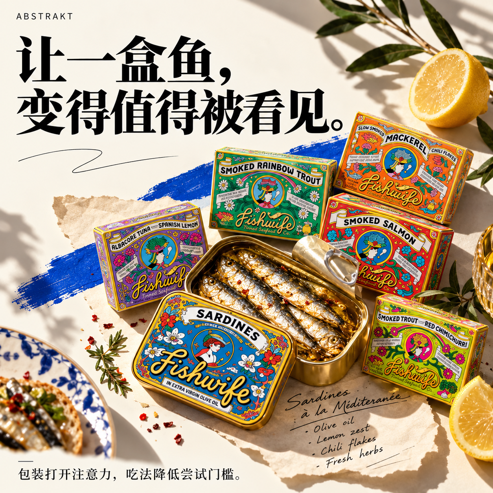
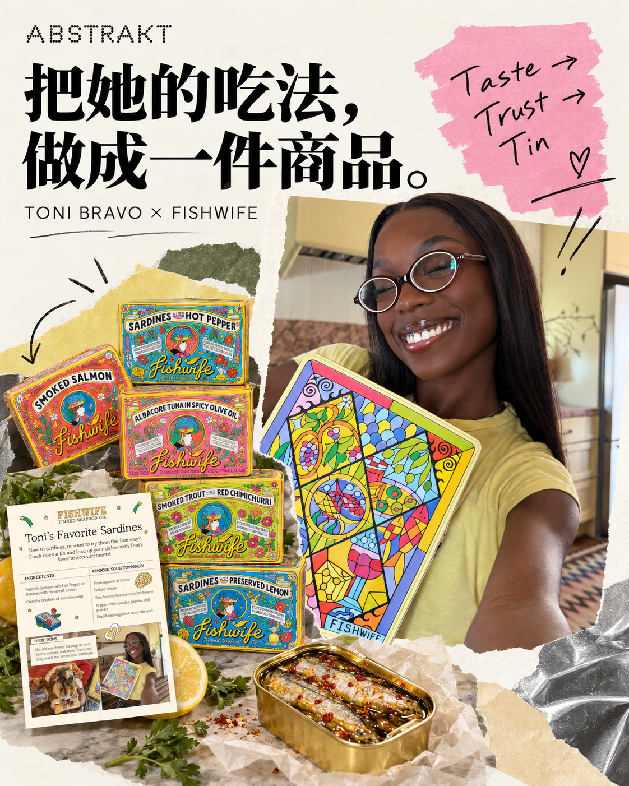
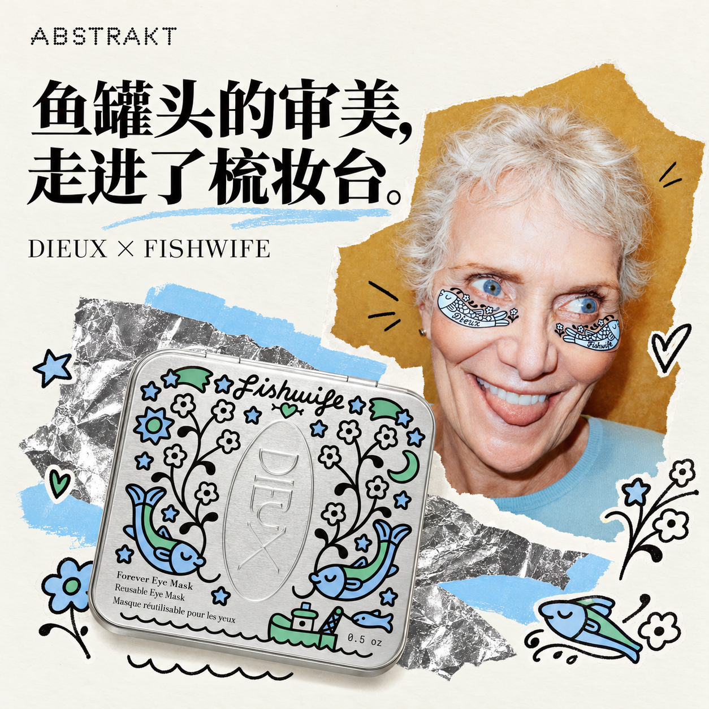

美妆博主终于有了自己的联名款。
不是口红，不是眼影，也不是什么限量版粉底液。
是一盒鱼罐头。
2026年，美国 TikTok 创作者 Toni Bravo 和罐头海鲜品牌 Fishwife 推出了一款联名组合装。里面有烟熏鳟鱼、三文鱼、金枪鱼，当然还有沙丁鱼。附赠的食谱卡片上，印着 Toni 本人的照片。[1]
她在视频里高兴地介绍自己的新产品，甚至给第一次吃鱼罐头的人安排了入门路线：不敢直接挑战沙丁鱼？可以先试试鳟鱼和金枪鱼。
别人教粉丝怎么挑适合自己的粉底色号，Toni 开始教粉丝怎么循序渐进地吃鱼。
这件事最奇怪的地方，是她原本根本不是美食博主。
Toni 曾在 Selena Gomez 的美妆品牌 Rare Beauty 工作，分享的是化妆、护肤和生活日常。直到有一天，她的社交账号里开始频繁出现罐头海鲜。
打开一盒鱼，撒点辣椒粉，加上辣酱，配饼干吃。她拍得认真，吃得也认真。
她甚至有一个专门囤鱼罐头的抽屉。
而且这不是临时培养出来的商业爱好。Toni 说自己很早就开始吃罐头海鲜，第一次尝试 Fishwife 大约是两年前。
在这场联名出现之前，鱼已经在她的生活里待了很久。
那么问题来了：
一家卖鱼罐头的公司，是怎么把这样一个人找出来的？
更重要的是，找出来以后，它到底做了什么？
01 / 一条鱼，值不值得花四万美元请人推荐？
先说一个数字。
2026年8月，Fishwife 创始人 Becca Millstein 在彭博社播客《Odd Lots》里聊起网红营销，提到自己曾收到过报价：一个大约80万粉丝的创作者，发一条推广内容，要价3万至4万美元。
Millstein 的反应很简单：公司负担不起。
她还透露，Fishwife 创立以来，付费请创作者制作内容并借助其账号发布的合作，总共不到十次。[2]
对于一家靠社交媒体走红、包装漂亮到像艺术品的消费品牌，这个数字有些出人意料。
但 Fishwife 并不排斥创作者。
恰恰相反，它可能比很多品牌都更依赖他们。
2020年，Millstein 和 Caroline Goldfarb 在洛杉矶创办 Fishwife。前者做过音乐营销，后者本来就有自己的社交媒体受众。两个人想把美国人印象中廉价、朴素的罐头海鲜，卖成像西班牙餐桌上那样值得享受的食品。
插画师 Danny Miller 设计了色彩鲜艳、复古又古怪的包装。那些罐头摆在一起，怎么看都不像超市里最朴素的蛋白质来源。

包装与吃法主题视觉。产品素材：Fishwife 官网；AI 辅助设计。
但包装只能让人愿意拿起来看看。
要让人愿意花更高的价格买一盒鱼，还需要有人解释：为什么值得买？买回去怎么吃？真的会好吃吗？
于是 Fishwife 很早就开始给美食创作者寄产品。
Alison Roman、Molly Baz 等人都曾收到过品牌的产品。2022年，Millstein 在采访中说，公司当时还没有投放付费广告。她更愿意花时间与记者、食谱作者和创作者建立关系，而不是直接把一万美元塞进 Facebook 广告系统。[3]
这不是没有成本的营销。
只是成本换了一种形式。
寄样品要钱，沟通要时间，关系要维护。更麻烦的是，东西寄出去，对方不一定会发；发了，也不一定有人买。
可如果一个人真的喜欢产品，她下次做饭、聚会、拍视频时，可能还会自然地提起它。
一次广告买的是一个发布时间。
一段关系，有机会让品牌在对方的生活里待得更久。
当然，这并不保证它比广告更划算。没有合作成本和实际成交数据，就算不出哪种方式的获客成本更低。
但至少，Fishwife 不必每次都从零开始购买别人的注意力。
02 / Toni 不是被一份“美食达人名单”找到的
Fishwife 的创作者合作后来逐渐有了专人负责。
Lauren Murphy 最早在2022年以顾问身份加入，每周大约工作五小时，主要任务就是给创作者和食谱作者寄产品。到2024年，她已经负责品牌的社交媒体、社区、达人、联盟分佣、合作伙伴和内容。[4]
有意思的是，这家公司并没有因此变成一台批量购买网红帖子的机器。
2026年3月，Murphy 在接受社交媒体行业通讯《Link in Bio》采访时，解释了团队寻找创作者的方法。
他们不只看粉丝量，而是看对方有没有真实、持续的饮食习惯：是不是本来就在做小食拼盘？是不是经常吃罐头海鲜？是不是已经在分享相关内容？
而且，大量合作机会不是品牌主动搜索出来的。
有些人本来就在谈论 Fishwife，甚至主动找上门。团队要做的，是注意到这些人，再通过私信、赠送产品、联盟计划和长期互动，把关系发展下去。[5]
换句话说，Fishwife 并不总是先决定“我们要找一位美食博主”，然后打开数据库筛选。
它会先看看，谁已经在为这种食品制造话题。
这就解释了 Toni 的特殊之处。
按照账号分类，她属于美妆和生活方式领域。
按照实际内容，她却是一位非常活跃的罐头海鲜爱好者。
更重要的是，她的观众未必是传统的鱼罐头消费者。
美食博主教你吃沙丁鱼，没什么奇怪的。美妆博主忽然开始认真研究沙丁鱼，反而会让人多看两眼。
而当她一次次展示怎么搭配、怎么调味、怎么从比较容易接受的鱼类开始尝试时，原本陌生的食物变得没那么难接近。
对 Fishwife 来说，这比单纯找到一个“粉丝画像匹配”的账号多了一层价值。
Toni 不只接触到潜在买家。
她还在替品牌完成一项费时的工作：教新消费者怎么开始。
不过，公开资料并没有交代双方第一次接触的具体经过。我们不知道是谁先发了私信，也不能断言 Toni 最早的内容来自品牌赠送。
能确认的是，Fishwife 注意到了这股热度，并逐渐把关系推进到了商业合作。
03 / 从一个折扣码，到一款真正的商品
2026年3月，Toni 与 Fishwife 已经有了专属折扣码合作。
到了5月，双方推出 Toni Bravo Bundle。[1][6]

Toni 联名主题拼贴。人物、组合装与食谱卡素材：Fishwife 官网；AI 辅助设计。
看上去只是把几款现有罐头放进一个盒子，为什么值得专门做一次联名？
因为 Toni 已经在视频里反复回答了消费者的问题。
第一次吃，买哪种？
怕腥，选什么？
沙丁鱼怎么搭配才好吃？
品牌不需要重新写一份使用说明书。它只需要把 Toni 已经讲过、观众已经看过的内容，整理成一个可以购买的组合。
她的食谱卡片，实际上是产品体验的一部分。
而这也改变了创作者在交易中的位置。
普通推广往往是品牌先确定商品，再请达人介绍。
这次却有点反过来：创作者先形成了一套自己的内容和吃法，品牌再围绕这些内容组织商品。
甚至连选品逻辑都很清楚。
Toni 在联名视频中介绍，组合里的鳟鱼、金枪鱼和三文鱼，都是她会推荐给罐头海鲜新手的选择。对还不敢直接尝试沙丁鱼的人，它们提供了一个没那么吓人的起点。
这不只是把达人头像印在包装上。
它让消费者买到的，不仅是一组罐头，还有一条已经有人替自己试过的入门路线。
折扣码解决的是价格和购买入口。
联名组合解决的，则是选择困难和第一次尝试的门槛。
至于它究竟卖出了多少盒、转化率比普通商品高多少，Fishwife 没有公开足够的数据。不能因为联名看起来成功，就假设它创造了巨额销售。
但合作设计本身，已经比单纯发一条广告多走了几步。
ABSTRAKT / 合作路径观察
从“喜欢吃”，到“买得到”
据正文整理；合作路径与销量归因需分别验证。
04 / 一家公司，开始把关系做成新品
Toni 不是 Fishwife 唯一把关系变成商品的例子。
更早之前，Millstein 与辣椒酱品牌 Fly By Jing 的创始人 Jing Gao 就是朋友，两家公司还曾共用办公空间。
有一天，她们试着把 Fly By Jing 的四川辣椒脆油加进 Fishwife 的烟熏三文鱼里。
后来，这个尝试成了正式商品。
Fishwife 销售负责人 Pierre Jamet 在2024年接受 NOSH 采访时说，这款联名三文鱼已经成为品牌全国各渠道销量第一的产品。
这次合作与 Toni 的组合装并不完全相同。
Toni 帮助品牌把已有产品重新组织、介绍给新消费者。
Fly By Jing 则直接参与了一个新口味的诞生。
但它们有一个共同点：合作不止于双方互相发帖，而是留下了真正能卖的东西。
Fishwife 也并非每次都愿意联名。
Jamet 说，团队评估新品时，会看口味、可持续性、单位经济效益，以及是否真的带来增量需求。[7]新品还会提前与 Whole Foods 等零售商沟通，确认有没有适合它的位置。
这听起来不如一场热闹的联名发布会浪漫。
但一家食品公司最终要面对的，不只是社交媒体的点赞，还有生产成本、货架空间，以及消费者会不会第二次购买。
到2026年，Fishwife 的合作已经远远超出食品圈。
它和护肤品牌 Dieux 推出过鱼主题的可重复使用眼膜。鱼的插画被印在眼膜和金属收纳盒上，售价25美元。[8]

Dieux × Fishwife 跨界主题拼贴。品牌宣传模特与产品素材：Fishwife 官网；AI 辅助设计。
这项合作并不是 Toni 带来的，不能把两件事硬连成因果。
但把它们放在一起，会发现 Fishwife 的营销逻辑已经不局限于“请人推荐鱼”。
它不断寻找新的文化入口：食谱、时尚、护肤、礼品、线下零售。
2026年3月，Murphy 透露，自己大约75%的工作时间都花在策划和执行新品、周边及合作项目上。团队希望至少每个月有一件值得宣布的新鲜事。[5]
这意味着，Fishwife 的社交账号并不是一张每天需要填满的内容日历。
它背后是一家公司不断制造值得谈论的新东西。
甚至连零售扩张，也能变成一次社区动员。
Fishwife 宣布进入美国中西部 Costco 门店时，鼓励消费者填写表格，要求自己附近的 Costco 引进产品。按照 Murphy 的说法，申请多到 Costco 数次发邮件，请他们暂时别再推广这张表格。[5]
这是另一个层面的商业转化。
消费者不仅能通过创作者认识品牌，还能主动向零售渠道表达需求。
从社交内容到联名商品，再到零售商的进货决策，Fishwife 尝试把不同环节连接起来。
05 / 最后，鱼不够了
那么，这套做法到底带来了多大的生意？
有一个数字很值得看。
2026年3月，Millstein 透露，Fishwife 的沙丁鱼产品在零售渠道的基础单位销售速度，从2025年第四季度到2026年第一季度提升至此前的约三倍；官网直销端约为此前的两倍。[5]
注意，这说的是销售速度，不是收入，更不是 Toni 一个人带来的成交。
当时 Toni 的联名组合装甚至还没有上市。
同期，沙丁鱼本身就在美国迎来一轮更广泛的流行。社交媒体上关于营养、护肤和吃法的讨论越来越多，全球部分渔业的供应也出现紧张。
Fishwife 抓住了需求，却无法控制整个市场。
而到了2026年8月，Millstein 在《Odd Lots》里谈起的，已经不只是营销了。
公司需要提前数月、甚至一年与罐头加工厂规划采购。社交媒体上的需求却可能在短时间内突然爆发。
零售商打电话来，说货架上的沙丁鱼卖空了，问 Fishwife 能不能赶紧补货。
为了抓住需求，公司多次选择空运产品，而不是走成本更低的海运。[2]
空运当然更快。
也当然更贵。
这意味着，品牌好不容易等来的销售机会，可能又要用被压缩的毛利来换。
这才是 Fishwife 故事里最有意思的反差。
它花了几年时间，让美国消费者重新认识一件老掉牙的食品。创作者教人怎么吃，品牌把吃法做成商品，社交媒体把兴趣推向货架。
结果，当越来越多人真的想买鱼时，公司不得不开始计算，怎样才能让鱼赶得上互联网。
Toni Bravo 已经教会一批美妆爱好者怎么吃沙丁鱼。
至于下一批消费者能不能吃上，恐怕得问问渔船、罐头厂和航空公司了。
编者按 / ABSTRAKT
Fishwife 的故事不只是找到合适的达人。它从真实内容中识别机会，通过长期互动建立合作，再把创作者的影响力接入选品、交易和渠道。对 ABSTRAKT 来说，值得研究的是如何让这些分散的判断与动作更高效地连接起来，同时看清每一步究竟创造了多少生意。
资料与图片来源
文中销售速度、收入与创作者合作成效沿用各自报道口径；品牌未公开 Toni 联名的完整销售及归因数据。
[1] Fishwife 官网：The Toni Bravo Bundle，含组合明细与配图
[2] Bloomberg Odd Lots：How a Sardine Gets From the Ocean to a Can，2026-08-07 · 访谈文字整理，采购与空运约 31–33 分钟，创作者合作约 50–52 分钟
[3] Marketing Brew：Fishwife made its presence known organically—now it’s thinking bigger，2022-04-07
[4] Marketing Happy Hour：Lauren Murphy 访谈，2024-06
[5] Link in Bio：Becca Millstein 与 Lauren Murphy 访谈，2026-03-19
[6] Toni Bravo：联名发布视频 · Influencer Marketing Academy 对合作时间线的整理，2026-05-18
[7] NOSH：Fishwife 销售负责人 Pierre Jamet 访谈，2024-12-24